Layout and styling
Embun lays elements out with flexbox, through taffy. row places children left to right, and column (or div) stacks them top to bottom. Sizes are in logical pixels, and spacing methods count in steps of 4 px: p_3 is 12 px of padding, gap_2 is 8 px.
Rows and columns
Put rows in columns and columns in rows. gap_* spaces the children, p_*, px_* and py_* pad them, and items_* and justify_* align them across and along the direction.
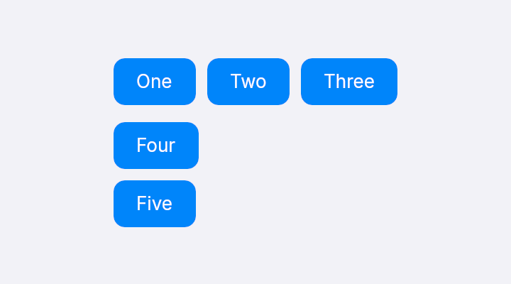
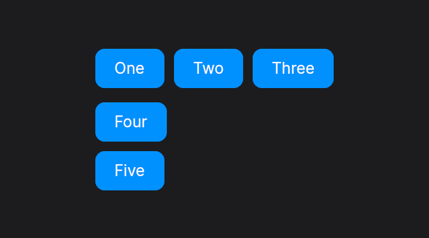
fn layout_stack(theme: &Theme) -> Element<Msg> {
let tile = |label: &str| div().px_4().py_2().rounded_lg().bg(theme.accent()).child(text(label.to_string()).text_color(theme.on_accent()));
column()
.gap_3()
.items_start()
.child(row().gap_2().child(tile("One")).child(tile("Two")).child(tile("Three")))
.child(column().gap_2().items_start().child(tile("Four")).child(tile("Five")))
}Growing and fixed sizes
w, h and size set pixels, w_full and h_full fill the parent, and grow takes the space left over. spacer() is an empty element that grows, which pushes siblings apart.
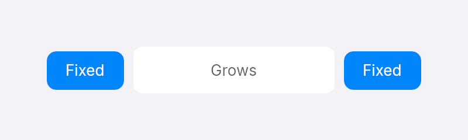
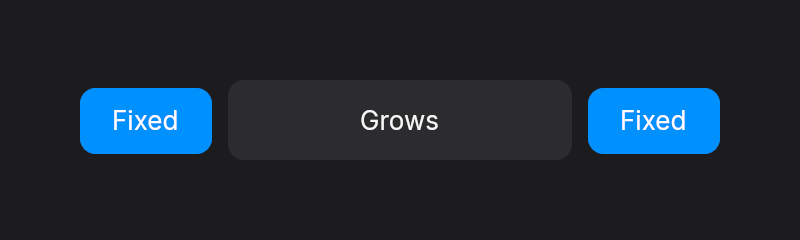
fn layout_grow(theme: &Theme) -> Element<Msg> {
let tile = |label: &str| div().px_4().py_2().rounded_lg().bg(theme.accent()).child(text(label.to_string()).text_color(theme.on_accent()));
row()
.w(320.0)
.gap_2()
.items_center()
.child(tile("Fixed"))
.child(div().grow().h(40.0).rounded_lg().bg(theme.surface()).items_center().justify_center().child(text("Grows")))
.child(tile("Fixed"))
}Wrapping
flex_wrap on a row moves children that do not fit onto the next line.
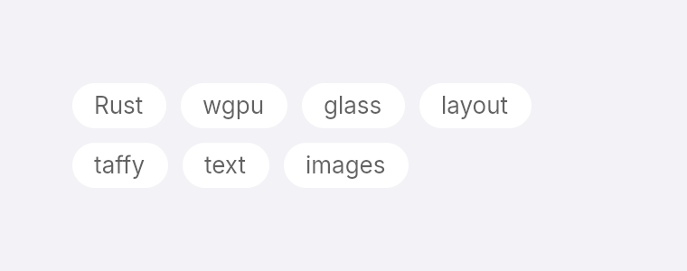
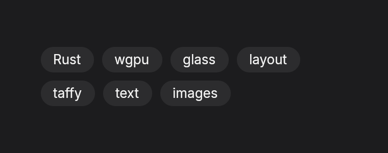
fn layout_wrap(theme: &Theme) -> Element<Msg> {
let tile = |label: &str| div().px_3().py_1().rounded_full().bg(theme.surface()).child(text(label.to_string()));
row()
.flex_wrap()
.gap_2()
.w(300.0)
.children(["Rust", "wgpu", "glass", "layout", "taffy", "text", "images"].map(tile))
}Absolute positioning
absolute takes an element out of the flow and places it from its parent's edges with top, right, bottom and left. inset(0.0) stretches it over the whole parent.
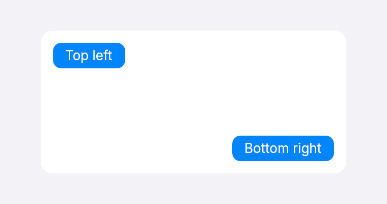
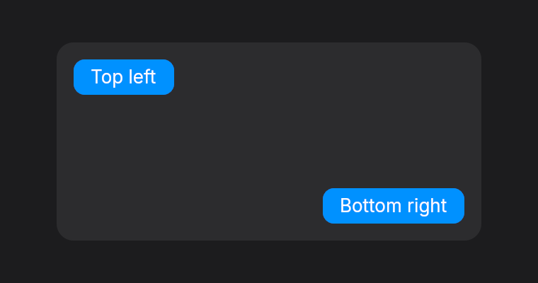
fn layout_absolute(theme: &Theme) -> Element<Msg> {
let tile = |label: &str| div().px_3().py_1().rounded_lg().bg(theme.accent()).child(text(label.to_string()).text_color(theme.on_accent()));
div()
.w(300.0)
.h(140.0)
.rounded_xl()
.bg(theme.surface())
.child(tile("Top left").absolute().top(12.0).left(12.0))
.child(tile("Bottom right").absolute().bottom(12.0).right(12.0))
}Scrolling
scroll_y makes a container scroll vertically when its children are taller than it. For long lists use list, which builds only the visible rows.
Surfaces and borders
bg fills with a color, rounded and the rounded_* sizes round the corners, and border draws an outline. Take colors from the theme so they follow light and dark mode.
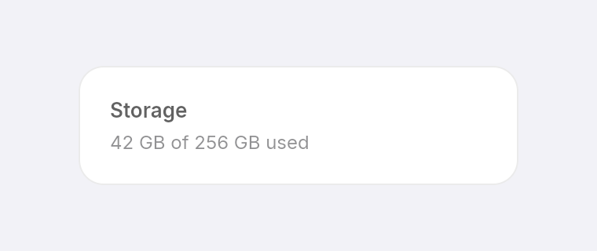
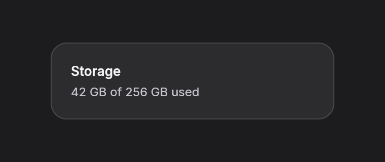
fn style_card(theme: &Theme) -> Element<Msg> {
column()
.w(280.0)
.p_5()
.gap_1()
.rounded_2xl()
.bg(theme.surface())
.border(1.0, theme.separator())
.child(text("Storage").font_semibold())
.child(text("42 GB of 256 GB used").text_sm().text_color(theme.secondary_label()))
}Gradients
bg_gradient(top, bottom) blends two colors from top to bottom.
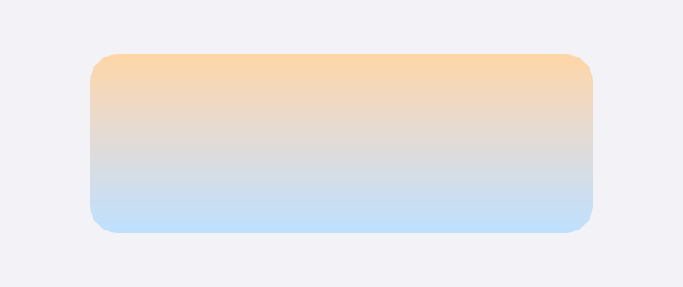
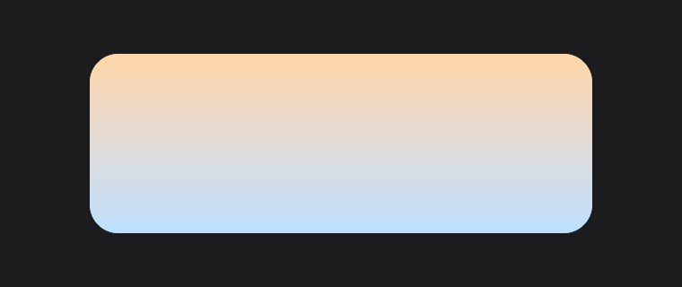
fn style_gradient(_theme: &Theme) -> Element<Msg> {
div()
.w(280.0)
.h(100.0)
.rounded_2xl()
.bg_gradient(Color::hex(0xffd6a5), Color::hex(0xbde0fe))
}